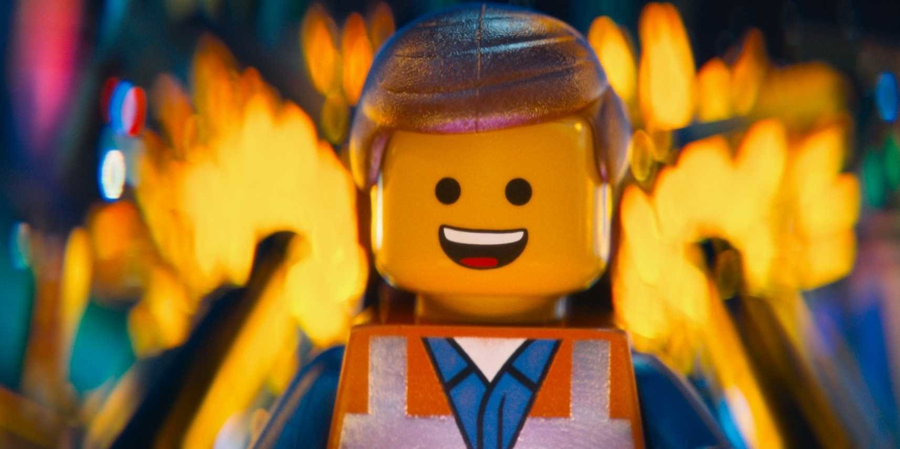
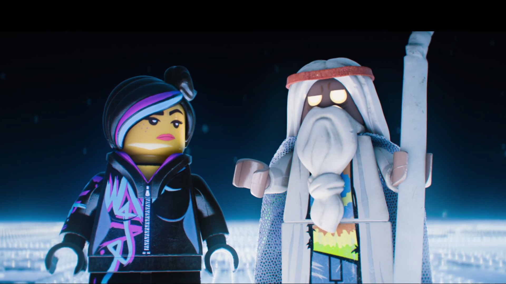

LA GRANDE AVENTURE LEGO
Sommaire :
- Synopsis
- Fiche technique
- Distribution
- Sources
Synopsis :
Emmet,
une personne ordinaire vivant à Bricksburg,
est pris par erreur pour le « Spécial »,
le sauveur de l'univers selon une prophétie
face à Lord Business,
un tyran maléfique
qui se cache sous l'identité
du Président Business
et qui veut détruire l'univers Lego avec
le « Kragle »,
une machine
permettant de coller toutes les figurines Lego.
Malgré lui, Emmet
va devoir se battre contre cette menace,
avec l'aide d'un vieil aveugle mystique,
Vitruvius,
d'une jeune femme robuste,
Cool Tag,
et du fiancé de cette dernière,
Batman.
Fiche technique :
- Titre original : The Lego Movie
- Titre français : La Grande Aventure Lego
- Titre québécois : Le Film Lego
- Réalisation : Phil Lord et Chris Miller
- Scénario : Phil Lord et Chris Miller
- Musique : Mark Mothersbaugh
- Production : Dan Lin, Doug Davison, Stephen Gilchrist, Roy Lee
- Sociétés de production : Village Roadshow Pictures, Lego, Warner Animation Group et Animal Logic
- Budget : 60 000 000 $
- Box-office : 468 048 132 $
- Pays d'origine : Danemark, Australie, États-Unis
- Langue originale : anglais
- Genre : animation, comédie, aventure
- Dates de sortie :
- États-Unis : 7 février 2014
- France et Québec : 19 février 2014
Distribution :
- Will Ferrell (VF : Maurice Decoster ; VQ : François Godin) : le père de Finn
- Jadon Sand (VF : Victor Biavan ; VQ : Clifford Leduc-Vaillancourt) : Finn
Sources :

ELMMET

VITRUVIUS ET COOL TAG